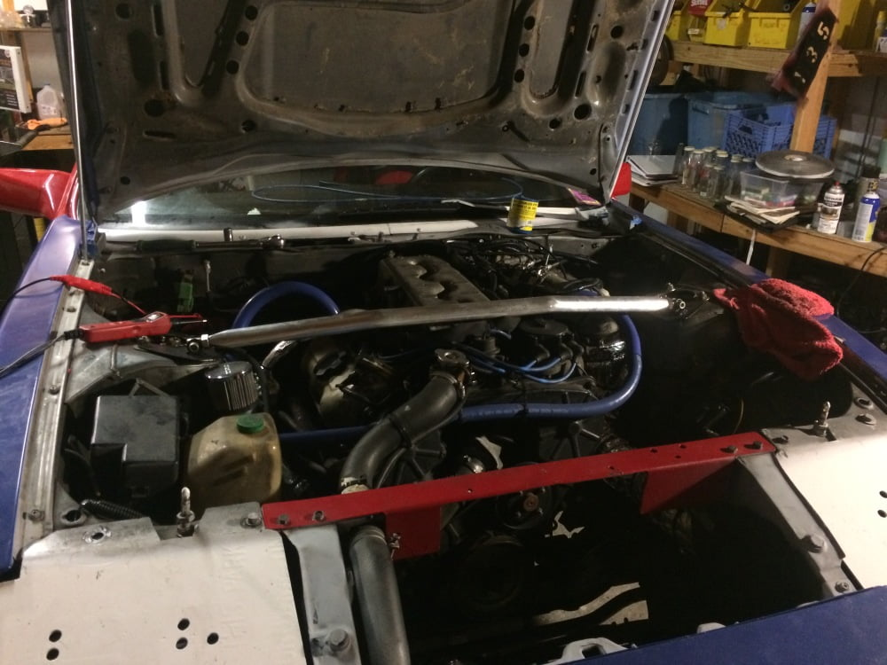

-
I am currently getting ready to swap an LS into my 87t car. One thing I am needing to know is what is the measurement of the offset for the motor mounts on the turbo crossmember. I know the driver side is further forward but how far forward is it? I have some adjustable motor mounts i've been working with that I think i can make work but their maximum offset is ~6.5 inches and im wanting to know if i need to modify them more to make them reach further.
Also how vital is the core support (the cross piece with the hood latch and that the upper radiator hose passes through) to the structural integrity of the chassis? I have seen several people with them cut out and haven't read anything about it causing a problem. Cutting it out would make alot of things much, much more simple for me but i dont want to ruin the chassis by doing so.if you're gonna be dumb you gotta be tough -
well i did some rough measurements of the mount offset in the car, looks like they are offset by about 5.5 inches so i should be good with the motor mounts on my LS.
Still looking for info on if cutting out the core support between the headlights will have any notable effects on the chassis.if you're gonna be dumb you gotta be tough -
Yes, just like adding a strut tower bar stiffens up the front, chopping out the core support is going to lose the only high structural "cross tie" forward of the cowl. -
Perhaps you could cut the support and replace it with a bolted brace. Then you can remove it to make space and put it back when you're done. -
yea i might look into making a bolt in brace, will also probably add a strut tower bar since it wont hurt to have.if you're gonna be dumb you gotta be tough -
Was checking out https://z31world.wordpress.com/categ…ssan-spotting/ and found a pic of a brace. Not the best looking, but functional.


Copyright © 2006–. All rights reserved. Privacy Policy
Comment